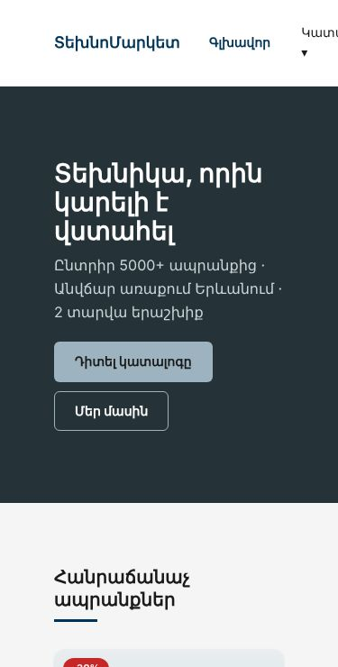
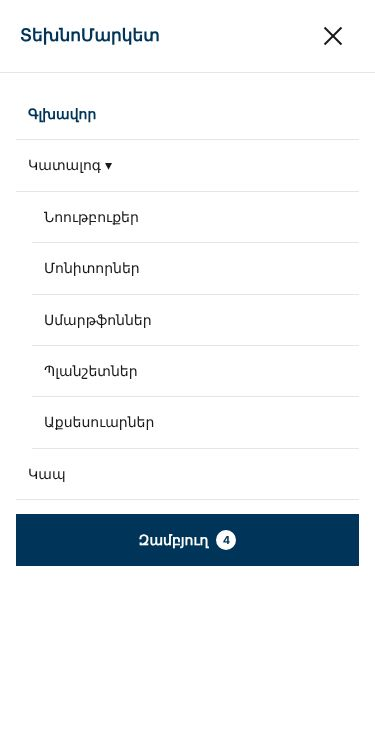

Առաջադրանք 2 / 3 · HTML Դաս 23 · 2 ժամ + տնային
Ադապտիվություն, հղկում, հրապարակում
Երեկվա երկու էջը աշխատում են միայն համակարգչում։ Այսօր դրանք դարձնում ենք ադապտիվ 320px-ից մինչև 1920px, ավելացնում ենք բուրգեր-մենյու առանց JavaScript-ի, անցնում ենք հասանելիության աուդիտ և հրապարակում ենք GitHub Pages-ում։ Ավարտելուց հետո համեմատիր օրինակ 2-ի գլխավոր էջի և կատալոգի հետ։ Մնացած էջերը Առաջադրանք 3-ում են։
00Որտեղից ենք սկսում և ուր ենք գնում



01Քայլեր
Քայլ 1 · Ադապտիվության բլոկ
Ավելացրու main.css-ի վերջում բաժին 10՝ երեք breakpoint-ով։ Ամեն breakpoint-ում փոխիր միայն այն, ինչ իսկապես կոտրվում է․
| Breakpoint | Ինչ է փոխվում |
|---|---|
max-width: 992px | --wall: 40px, բաժինների padding-ը փոքրանում է։ Կատալոգում ֆիլտրերը գնում են արդյունքներից վերև (w-md-100), իսկ fieldset-երը դասավորվում են մեկ շարքով flex-wrap-ով |
max-width: 768px | --wall: 20px, բուրգերը հայտնվում է, hero-ի և CTA-ի կոճակները՝ 100%, CTA ֆորման՝ ուղղահայաց, footer-ի ներքևի տողը՝ կենտրոնում, dropdown-ը բուրգերի ներսում՝ միշտ բաց և ներդրված |
max-width: 400px | Քարտի գինը և «Գնել» կոճակը՝ մեկը մյուսի տակ |
Ապրանքների ցանցի և սյուների համար նոր media query պետք չէ․ .grid-auto-ն և w-md-100-ը արդեն հարմարվում են։ Եթե գրում ես շատ ադապտիվ կոդ, հավանաբար երեկ ինչ-որ բան ֆիքսված չափով ես գրել։
Քայլ 2 · Բուրգեր-մենյու checkbox-ով
<header class="header">
<input type="checkbox" id="nav" class="nav-toggle"> <!-- ⭐ .row-ից ԱՌԱՋ -->
<div class="row align-center justify-between">
<div class="col"> ... լոգո ... </div>
<div class="col">
<label for="nav" class="burger">
<span></span><span></span><span></span>
<span class="visually-hidden">Մենյու</span>
</label>
<nav aria-label="Գլխավոր մենյու"> ... </nav>
</div>
</div>
</header>- Checkbox-ը
.row-ից առաջ է, որպեսզի.nav-toggle:checked ~ .row .menuսելեկտորը աշխատի (Դաս 6) - Checkbox-ը թաքնված է
opacity: 0-ով, ոչdisplay: none-ով, որպեսզի մնա ստեղնաշարով հասանելի - Մենյուն
position: fixedէ header-ի տակ և դուրս է գալիսtransform-ով (Դաս 15, 21) - Բաց վիճակում երեք գիծը դառնում է ×
Քայլ 2ա · Dropdown-ը բուրգերի ներսում
Հեռախոսում :hover չկա, ուստի ենթամենյուն բուրգերի ներսում ցույց տուր միշտ բաց՝ ձախից փոքր նահանջով։ Կարևոր մանրուք՝ visibility: inherit։ Այդ դեպքում ենթամենյուն թաքնվում է ծնողի հետ, երբ բուրգերը փակ է, և ֆոկուսի թակարդ չի առաջանում (տես հաջորդ քայլը)։
.submenu {
position: static;
padding: 0 0 0 16px;
border: 0;
box-shadow: none;
opacity: 1;
visibility: inherit;
transform: none;
}Համակարգչում checkbox-ը պետք չէ։ Տուր նրան display: none, իսկ 768px-ից ներքև՝ display: block։ Հակառակ դեպքում համակարգչում Tab-ը կանգ կառնի անտեսանելի checkbox-ի վրա։
Քայլ 3 · Ֆոկուսի թակարդը
Փակ մենյուի հղումները էկրանից դուրս են, բայց դեռ ստանում են ֆոկուս։ Սեղմիր Tab հեռախոսի լայնությամբ, և ֆոկուսը «կանհետանա» անտեսանելի հղումների մեջ։ Ուղղիր visibility: hidden-ով փակ վիճակում և visibility: visible-ով բաց վիճակում։ visibility-ը հանում է տարրերը Tab-ի հերթից և միաժամանակ անիմացվում է։
Քայլ 4 · Ստուգում յոթ լայնությամբ
DevTools → Device toolbar։ Ստուգիր երկու էջն էլ 320, 375, 414, 768, 1024, 1280 և 1920 լայնություններով։ Ապա դանդաղ քաշիր պատուհանը 1920-ից մինչև 320․ խնդիրները հաճախ breakpoint-ների միջև են։ Հորիզոնական սքրոլի պատճառը գտնելու համար՝
document.querySelectorAll('*').forEach(e => {
if (e.offsetWidth > document.body.offsetWidth) console.log(e);
});Քայլ 5 · Վեց հղկում
| Ինչ | Ինչպես | Դաս |
|---|---|---|
| Խարիսխները չեն մտնում header-ի տակ | html { scroll-padding-top }, scroll-behavior: smooth | 15 |
| Երկար հայերեն բառերը չեն դուրս գալիս | body { overflow-wrap: break-word } | 9 |
| Ընտրված տեքստի գույնը | ::selection տոկեններով | 19 |
| Hero-ի տողերի լայնությունը | max-width: 18ch և 50ch | 7 |
| Ամբողջ քարտը սեղմելի է | Անվանումը՝ հղում, .card__title a::after { inset: 0 }, կոճակը՝ z-index-ով վերևում | 15, 17 |
| Շարժման հարգանք | @media (prefers-reduced-motion: reduce) | 21 |
Քայլ 6 · Հասանելիության աուդիտ
- Ձեռքդ վերցրու մկնիկից և անցիր ամբողջ էջը միայն
Tab-ով։ Առաջինը պետք է հայտնվի skip-link-ը - Ամեն պահի պետք է տեսնես, թե որտեղ է ֆոկուսը, և հերթականությունը պետք է համընկնի տեսողականին
- Հեռախոսի լայնությամբ բացիր բուրգերը ստեղնաշարով (
Space) - Գործարկիր Lighthouse-ը Incognito ռեժիմում և WAVE ընդլայնումը։ Ուղղիր ամեն ինչ, ինչ 90-ից ցածր է
- Ստուգիր HTML-ը
validator.w3.org-ում
Քայլ 7 · Հրապարակում և README
git init
git add .
git commit -m "ՏեխնոՄարկետ landing page"
git remote add origin https://github.com/username/technomarket.git
git branch -M main
git push -u origin main
# GitHub → Settings → Pages → Deploy from a branch → main / (root) → Save
# Հասցեն՝ https://username.github.io/technomarket/README-ն գրիր օրինակի կաղապարով (example-2-final/README.md)՝ դեմոյի հղումով, տեխնոլոգիաներով, կառուցվածքով, «Հայտնի սահմանափակումներ» բաժնով և Lighthouse-ի քո թվերով։
02Հաճախ հանդիպող սխալներ
| Սխալ | Ինչպես ուղղել |
|---|---|
| Կատալոգը հեռախոսում ունի հորիզոնական սքրոլ, թեև բոլոր սյուները 100% են | fieldset-ը լռելյայն չի նեղանում իր բովանդակությունից փոքր։ Տուր նրան min-width: 0 (նույնը, ինչ input-ի դեպքում, Դաս 12) |
Դասավորման select-ը դուրս է գալիս էկրանից | Գործիքագոտու ֆորմային՝ flex-wrap |
| Բուրգերը սեղմվում է, բայց մենյուն չի բացվում | Checkbox-ը .row-ից առաջ չէ, կամ for-ը և id-ն չեն համընկնում |
| Բաց մենյուն ծածկում է header-ը կամ թողնում է բաց տարածք | Չափիր header-ի բարձրությունը DevTools-ով և դիր այն տոկենում (--header-h) |
| Ամբողջ քարտը սեղմելի է, բայց «Գնել»-ը այլևս չի սեղմվում | Կոճակին՝ position: relative; z-index: 2 |
| GitHub Pages-ում նկարները չեն բեռնվում | Ուղիները /images/...-ով են սկսվում կամ ռեգիստրը չի համընկնում (Դաս 2) |
| Մենյուի հղմանը սեղմելուց հետո մենյուն բաց է մնում | Սա սպասելի է առանց JS-ի․ գրիր այն README-ի սահմանափակումներում։ Կուղղվի JS բլոկում |
03Ինչպես համեմատել օրինակի հետ
1. Բաժին 10-ը. համեմատիր քո ադապտիվ կոդի ծավալը օրինակի հետ։ Եթե քոնը երկու անգամ ավելի երկար է, գտիր, թե երեկ որտեղ ես գրել ֆիքսված չափ։
2. Բուրգերը. բացիր example-2-final-ը 375px-ում և անցիր Tab-ով։ Համեմատիր քոնի հետ։
3. Lighthouse. գործարկիր երկու էջի վրա։ Եթե օրինակի թիվը ավելի բարձր է, բաց արա Lighthouse-ի հաշվետվությունը և գտիր տարբերության պատճառը։
04Վերջնական ընդունում
Տեսք
- Համապատասխանում է մակետին
- Բոլոր հեռավորությունները սանդղակի վրա են
- Տառաչափերը 5-ից քիչ են, կլորացումները և ստվերները՝ հետևողական
Ադապտիվություն
- Երկու էջն էլ աշխատում են 320px-ից 1920px, չկա հորիզոնական սքրոլ
- Կատալոգի ֆիլտրերը հեռախոսում արդյունքներից վերև են և չեն դուրս գալիս էկրանից
- Բուրգերն աշխատում է և մկնիկով, և ստեղնաշարով, dropdown-ը նրա ներսում բաց է
- Ցանցերը ճիշտ են վերակառուցվում, կոճակները հեռախոսում հարմար են
Կոդ
:root-ից դուրս HEX չկա- Չկա
!important(բացի reduced-motion-ից) և inline style - HTML-ը վալիդ է
Հասանելիություն
- Ամբողջ էջն անցնելի է
Tab-ով, ֆոկուսը տեսանելի է, ֆոկուսի թակարդ չկա - Կոնտրաստները ≥ 4.5:1, սեղմելի տարածքները ≥ 44×44px
- Lighthouse Accessibility ≥ 90 (նպատակը՝ 100)
Հրապարակում
- Կոդը GitHub-ում է, էջը հասանելի է հղումով
- Բոլոր նկարները բեռնվում են, էջը ստուգված է իրական հեռախոսում
- Կա README՝ «Հայտնի սահմանափակումներ» բաժնով
Ուղարկիր երեք բան․ GitHub Pages-ի հղումը, պահոցի հղումը և Lighthouse-ի սքրինշոթը։ Հաջորդը Առաջադրանք 3-ն է՝ մնացած հինգ էջը, մեկ շաբաթ տնային աշխատանքով։